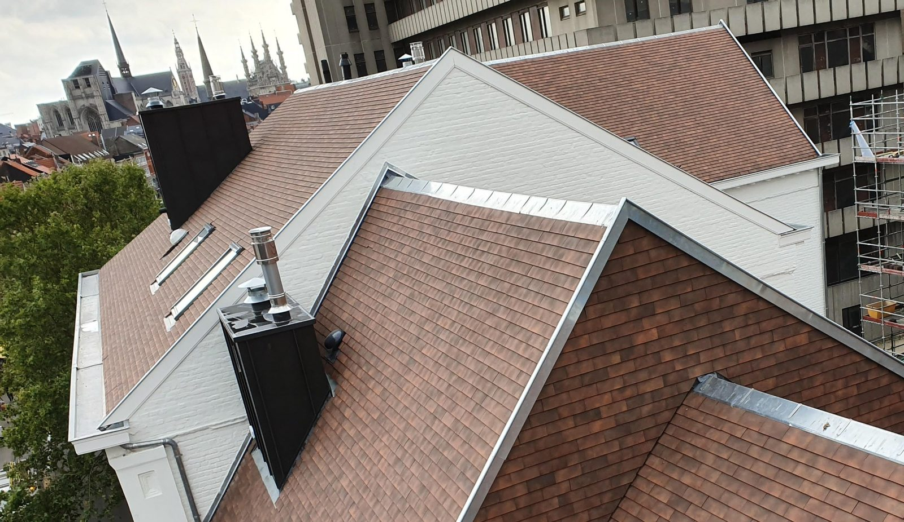

Zink-, koper- en loodwerken in Limburg
Zink-, koper- en loodwerken zijn vaak de details die bepalen of een dak netjes en waterdicht afgewerkt is. Vooral bij randen, goten en aansluitingen is een correcte plaatsing belangrijk.
Voor welke zink-, koper- en loodwerken kan u terecht?
Deze materialen worden gebruikt voor de afwerking en waterafvoer rond verschillende dakdelen. De nodige ingreep wordt afgestemd op het bestaande dak en kan zowel deel zijn van een renovatie als van een gerichte herstelling.
- Dakgoten
- Afwerking aan dakranden
- Aansluitingen
- Loodslabben of loodafwerking waar van toepassing
- Zinkwerk rond dakdetails
- Herstellingen aan bestaande afwerking

Waar wordt op gelet bij dakafwerking en waterafvoer?
Regenwater moet vlot afgevoerd worden en aansluitingen moeten waterdicht blijven. Daarom wordt gelet op de staat van goten, randen, slabben en details rond andere dakelementen. Een nette aansluiting helpt om problemen op moeilijk zichtbare plaatsen te voorkomen.
Meer dakwerken in Limburg
Praktische antwoorden
Waarvoor dienen zink-, koper- en loodwerken aan een dak?
Ze worden gebruikt voor goten, randen, slabben en andere aansluitingen. Deze details helpen regenwater af te voeren en het dak waterdicht af te werken.
Kan een dakgoot hersteld of vernieuwd worden?
Ja, afhankelijk van de staat kan een bestaande goot hersteld of vernieuwd worden. Eerst wordt bekeken waar het probleem zit en hoe de goot aansluit op het dak.
Waarom zijn aansluitingen zo belangrijk?
Water zoekt vaak zijn weg langs randen en overgangen tussen verschillende materialen. Een correcte aansluiting helpt waterinsijpeling op die plaatsen te voorkomen.
Doet Vandormael Werner ook kleinere zinkwerken?
Ja, ook een beperkte herstelling of afwerking in zink kan besproken worden. Foto's helpen om vooraf een eerste beeld te krijgen.
In welke regio voert Werner zinkwerken uit?
Werner werkt vanuit Wellen en voert zink-, koper- en loodwerken uit in de ruime regio Limburg.
Contact opnemen met Vandormael Werner
Wilt u een dakwerk bespreken? Bel Werner of stuur enkele foto's door via e-mail, zodat de situatie eerst bekeken kan worden.